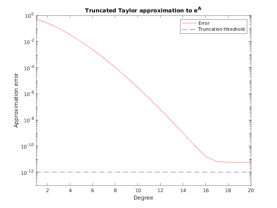

Evaluating a matrix polynomial
The function polyvalm is the matrix version of polyval. It evaluates a matrix polynomial of the form
$$ p(A) = p_0 I + p_1 A + p_2 A^2 + \ldots + p_d A^d, $$
where $A$ is allowed to be a $\mathcal{QT}$ matrix.
Contents
Syntax
- P = polyvalm(p, A)
Example
As a small example, we check the quality of a low-degree truncated Taylor approximant for the matrix exponential. We choose a matrix of small norm to ensure a fast convergence.
At some point, the approximation cannot be improved beyond the truncation threshold in use in the toolbox.
A = cqt([ .5 .5 ], [ .5 .5 ], rand(8) / 10); eA = expm(A); max_degree = 20; res = zeros(1, max_degree); for d = 1 : max_degree p = 1 ./ factorial(d : -1 : 0); res(d) = norm(polyvalm(p, A) - eA) / norm(eA); end semilogy(1 : max_degree, res, 'r-'); hold on; plot(1 : max_degree, cqtoption('threshold') * ones(1, max_degree), 'k--'); legend('Error', 'Truncation threshold'); xlabel('Degree'); ylabel('Approximation error'); title('Truncated Taylor approximation to e^A'); axis([ 1 max_degree 1e-1*cqtoption('threshold'), 1 ]);